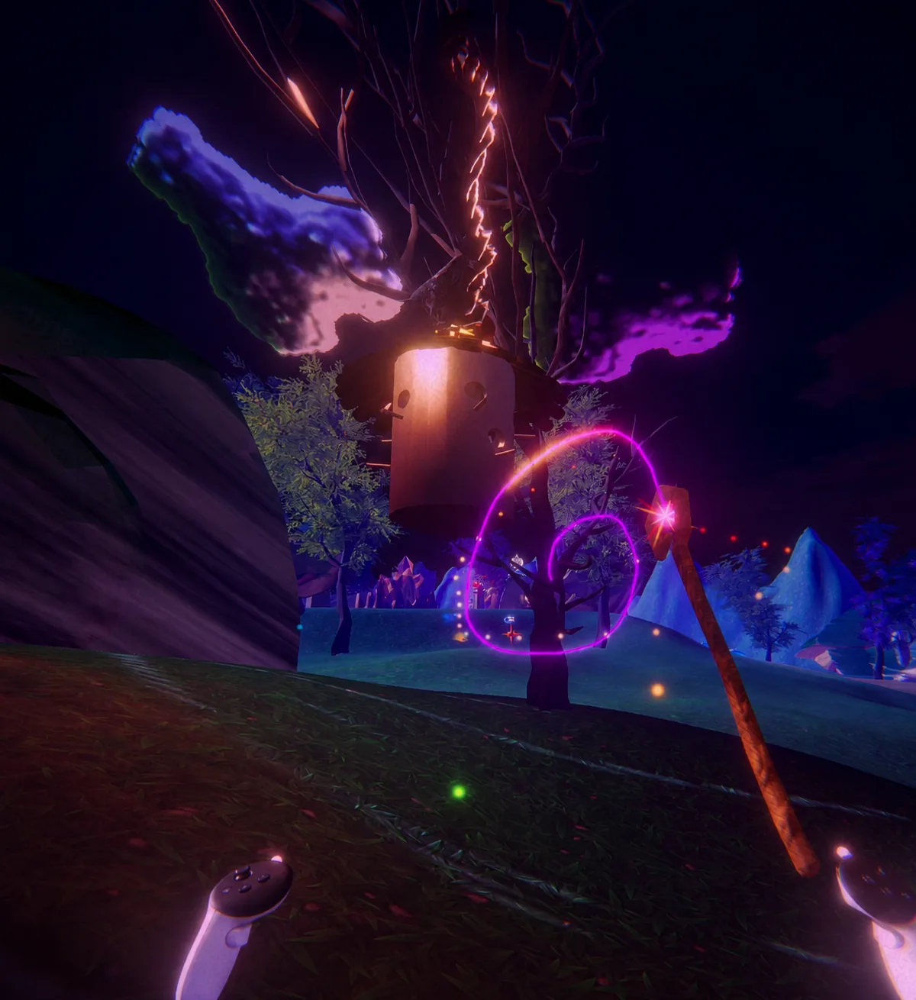

Path of Anu
A Meta Quest 3 spellcasting puzzle experience where my work crossed Houdini procedural tools, VFX, environment development, quest systems, interactables, and Unity integration.
Technical Art
Rock, tree, and ivy HDAs; spell VFX; lighting and visual development.
Gameplay
C# managers, interactables, spell-driven puzzle state, and progression support.
Why it matters
Shows how I bridge artist-facing workflows and player-facing systems.